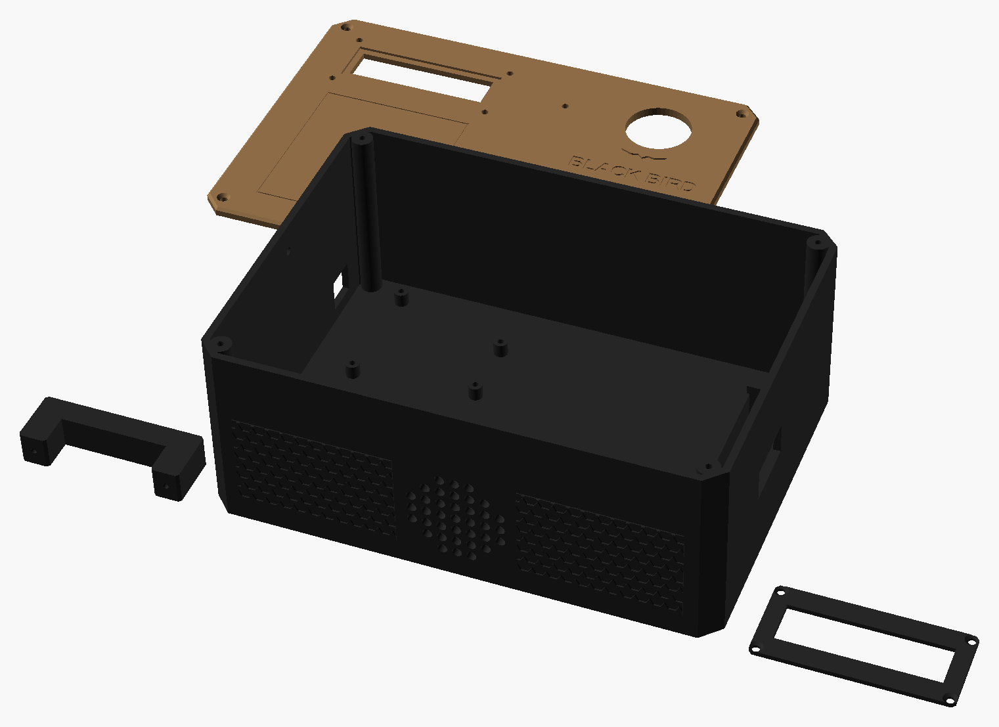

Bomba de jogo com 3 modos de desarme (senha, segurar botão e fios), sirene de 110 dB e tela LCD. Arduino Uno do kit iniciante, caixa impressa em 3D. Medidas em milímetros.
Encoste um cartão de crédito/débito na tela e mova o controle até o retângulo ter exatamente o mesmo tamanho (85,6 × 54 mm).
px/mm| Tecla | Modo | Armar (ataque) | Desarmar (defesa) | Erro |
|---|---|---|---|---|
| A | CÓDIGO | Digita a senha de armar e aperta # | Digita a senha de desarmar e aperta #. A senha pode estar em cartões de inteligência espalhados pelo campo | Senha errada tira tempo (penalidade) e conta 1 erro |
| B | SEGURAR | Segura o botão grande por X s (barra de progresso) | Segura o botão por Y s. Soltou, perde o progresso e o tempo continua correndo | Não tem: o risco é levar tiro segurando o botão |
| C | FIOS | Com os 4 fios encaixados, segura o botão por X s | Puxa o fio certo entre 4 (vermelho, azul, amarelo, verde). O fio certo é sorteado a cada rodada ou fixado na configuração para virar pista | Fio errado tira tempo e conta 1 erro |
Em todos os modos: a contagem bipa a cada 1 s, a cada 0,5 s nos últimos 30 s e a cada 0,25 s nos últimos 10 s. Nos últimos 30 s cada bipe também dá um toque curto na sirene, para o campo inteiro ouvir. Opcional: "armar até" (tempo da rodada); se o ataque não plantar a tempo, a defesa vence.
Painel de cima (tampa da caixa). O teclado de membrana é adesivo e cola direto no painel impresso; o LCD fica embaixo de uma moldura.
LCD 16×2 de fundo azul. No modo "tamanho real" aparece a área visível real do display: 64,5 × 16 mm.
Fica salva na memória do Arduino (EEPROM): desligou e ligou, continua igual. Em cada tela: digite o número, * apaga, # confirma; confirmar vazio mantém o valor atual.
| Tela | Padrão | O que é |
|---|---|---|
| Bomba (segundos) | 300 | Tempo até explodir depois de armada (10 a 5999 s) |
| Armar até (min) | 0 | Tempo para o ataque plantar. 0 = sem limite |
| Segurar armar / desarmar | 5 / 10 s | Tempo segurando o botão (modos SEGURAR e FIOS) |
| Senha ARMAR / DESARM | 1234 / 4321 | 4 a 8 dígitos. A tecla A gera uma senha aleatória de 4 dígitos |
| Fio certo | 0 | 0 = sorteia a cada rodada; 1–4 = fixo (1 vermelho, 2 azul, 3 amarelo, 4 verde) |
| Penalidade | 60 s | Tempo tirado a cada senha ou fio errado |
| Erros p/ explodir | 3 | 0 = sem limite |
No fim da rodada: # começa outra com a mesma configuração e * volta ao menu. Antes de armar, * (com a senha vazia) também volta ao menu. Depois de armada, não tem como voltar ao menu pelo teclado, só desarmando ou desligando.
Todas as peças impressas deste projeto, nas cores de impressão (coyote e preto); cada peça sai de uma cor só. As tampas aparecem viradas para cima, como ficam no uso. Arquivos em 3D/stl; quantidades, suportes e configuração no 3D/LEIA-ME.txt.

| Componente | Medidas (mm) | Função |
|---|---|---|
| Arduino Uno R3 (do kit iniciante) | 68,6 × 53,4 | Cérebro: lê o teclado, o botão e os fios, controla a tela e o som |
| Display LCD 16×2 com módulo I2C soldado | 80 × 36 × 11 | Mostra tempo, senha e resultado. Só 4 fios graças ao I2C |
| Teclado matricial de membrana 4×4 | 69 × 77 × 1 | Digitar senhas e navegar no menu. Adesivo atrás |
| Botão arcade 30 mm | furo Ø 30 | Armar/desarmar segurando |
| 4 bornes banana 4 mm + 4 pinos banana | furo Ø 6–8 | Os "fios" da bomba: pino puxado = fio cortado. Não gasta fio |
| Sirene piezo 12 V 110 dB | ≈ 60 × 40 (confira) | Toque ao armar, últimos 30 s e explosão. Funciona com os 9 V das pilhas, um pouco mais baixa |
| Módulo relé 1 canal 5 V (do kit) | 50 × 26 | O Arduino liga a sirene por ele |
| Buzzer ativo 5 V (do kit) | Ø 12 | Bipe da contagem e das teclas |
| LED vermelho 3 mm + resistor 220–560 Ω | Ø 3 | Pisca junto com o bipe |
| Suporte 6 pilhas AA com chave e tampa | 96 × 72 × 19 | Alimentação de 9 V (ou 7,2 V com recarregáveis) e chave liga/desliga |
| Caixa, painel, moldura do LCD, grade da sirene, alça, clipe do suporte (impressos) | 210 × 150 × 85 | PETG ou PLA, impresso em partes |
Esquema de ligação, sem escala. Cada bolinha amarela é um pino ou terminal onde vai um fio; os pontos maiores marcam onde dois fios se unem. As etiquetas "5V" e "GND" indicam o mesmo fio do Arduino, sem desenhar a volta inteira.
| De | Para | Observação |
|---|---|---|
| Pilhas + (fio vermelho do suporte) | Uno VIN e relé COM | A chave do suporte já corta tudo |
| Pilhas − | Uno GND (barramento de GND) | Todo GND do projeto vai junto |
| Relé NO | Sirene + (fio vermelho) | Sirene − no GND. NO = "normalmente aberto": só toca quando o relé fecha |
| Uno 5V | LCD VCC + relé VCC | |
| Uno A4 / A5 | LCD SDA / SCL | Endereço 0x27 (se a tela ficar em branco, troque para 0x3F no código) |
| Teclado pinos 1–4 (linhas) | D9, D8, D7, D6 | Pino 1 é o da ponta esquerda, olhando o teclado de frente |
| Teclado pinos 5–8 (colunas) | D5, D4, D3, D2 | Se as teclas saírem trocadas, inverta a ordem no código |
| D10 | Buzzer ativo + | Buzzer − no GND |
| D11 | Relé IN | A maioria liga com nível baixo; o código já trata isso (RELE_ATIVO_EM_LOW) |
| D12 | Botão arcade (um terminal) | Outro terminal no GND. Usa o pull-up interno, sem resistor |
| D13 | Resistor 220–560 Ω → LED (perna longa) | Perna curta no GND |
| A0, A1, A2, A3 | Bornes 1 (vermelho), 2 (azul), 3 (amarelo), 4 (verde) | Usa o pull-up interno: pino encaixado = 0, puxado = 1 |
| Fio do jogo (cabo colorido com pino banana) | GND, por dentro da caixa | Uma ponta soldada no GND interno, passa pelo passa-fios, a outra tem o pino banana |
BOMBA_SD/BOMBA_SD.ino (a pasta precisa ter o mesmo nome do arquivo) e clique em Carregar.SIRENE_EXPLOSAO_SEG), toques de sirene no fim da contagem (SIRENE_ULTIMOS_SEG) e nomes das cores dos fios (COR_FIO). O resto se configura pelo teclado.3D/LEIA-ME.txt (PETG, 5 paredes, 40% giroide, resistente a BB): caixa em 2 metades se a mesa for pequena, painel de 3 mm, moldura do LCD, grade da sirene, alça, clipe do suporte de pilhas e 4 passa-fios. Coloque porcas M3 embutidas nos 4 cantos da caixa.Preços pesquisados em out/2026 no Mercado Livre e em lojas nacionais, sem frete. Só produtos novos: os links do Mercado Livre já abrem com o filtro "Novo". A prioridade foi comprar em conjuntos: o kit iniciante já traz Uno, cabo, protoboard, jumpers, LEDs, resistores, buzzer e relé, e as sobras (botões, relés, jumpers, LEDs) servem para a maleta hacker. As peças impressas não entram no custo.
| Item | Onde | Menor | Maior |
|---|---|---|---|
| Conjunto: kit Arduino Uno R3 iniciante (Uno, cabo USB, protoboard, jumpers, LEDs, resistores, buzzer ativo e passivo, relé 1 canal). O menor valor é o kit de 90 peças (sem relé) + 1 relé avulso (≈ R$ 12) | Mercado Livre (180 pçs + relé) | R$ 115,49 | R$ 119,00 |
| Conjunto: display LCD 16×2 + módulo I2C já soldado | Mercado Livre · Mercado Livre | R$ 22,36 | R$ 33,90 |
| Teclado matricial de membrana 4×4 (o kit com 5 sai R$ 39,53, se quiser reserva) | Mercado Livre | R$ 14,00 | R$ 14,00 |
| Sirene piezo 12 V 110 dB | Mercado Livre | R$ 23,35 | R$ 28,90 |
| Conjunto: kit 10 botões arcade 30 mm (1 na bomba, 1 no speedloader 07, 8 de reserva) | Mercado Livre | R$ 45,00 | R$ 59,00 |
| Conjunto: 4 bornes fêmea + 4 pinos banana 4 mm | Mercado Livre | R$ 27,90 | R$ 27,90 |
| Suporte 6 pilhas AA com chave e tampa | Mercado Livre | R$ 19,77 | R$ 26,97 |
| Pilhas AA (6 un.; dispensável se já tiver recarregáveis) (estimativa) | Mercado Livre | R$ 20,00 | R$ 30,00 |
| Cabinho flexível 0,5 mm² em 4 cores, para os fios do jogo (estimativa) | Mercado Livre | R$ 15,00 | R$ 25,00 |
| Kit parafusos e porcas M3 (estimativa) | Mercado Livre | R$ 15,00 | R$ 15,00 |
| Total (peças impressas não entram) | sem frete | ≈ R$ 318 | ≈ R$ 380 |
Valor que fica de fato na bomba (sem os 9 botões arcade que sobram para outros projetos): cerca de R$ 40 a menos, ≈ R$ 278–327.